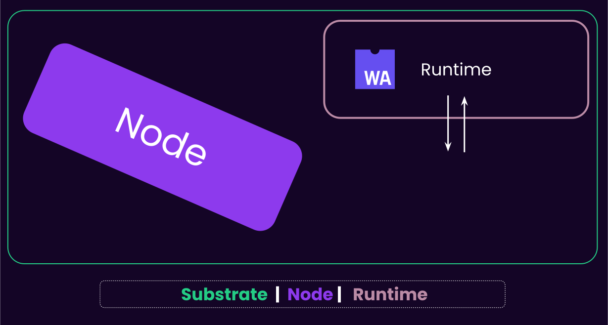
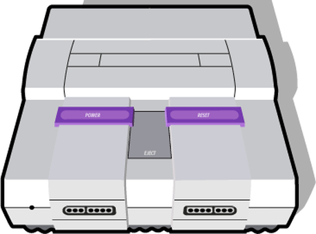

<!DOCTYPE html>
<html lang="en">

<head>
  <meta charset="utf-8" />
  <meta name="viewport" content="width=device-width, initial-scale=1.0, maximum-scale=1.0, user-scalable=no" />

  <title>LCTX 5 - The State Transition Function</title>
  <link rel="icon" href="./../../assets/favicon.svg" />
  <link rel="shortcut icon" href="./../../assets/favicon.png" />
  <link rel="stylesheet" href="./../../dist/reset.css" />
  <link rel="stylesheet" href="./../../dist/reveal.css" />
  <link rel="stylesheet" href="./../.././assets/styles/PBA-theme.css" id="theme" />
  <link rel="stylesheet" href="./../../css/highlight/shades-of-purple.css" />

  <link rel="stylesheet" href="./../.././assets/styles/custom-classes.css" />

</head>

<body class="site">
  <header class="site-header">
    <!-- This logo is a link only on the watching server, not the production build -->
    <a href="">
      
    </a>
  </header>
  <main class="reveal">
    <article class="slides">
      <section  data-markdown><script type="text/template">

# Light Client Transaction

#### Part 5: The State Transition Function
</script></section><section  data-markdown><script type="text/template">
## Enter the Runtime

Once the transaction is included in the block, we need to execute the state transition function.

At this point all of the execution is happening inside the Runtime via Runtime APIs.
</script></section><section  data-markdown><script type="text/template">
## The Client vs Runtime

A key concept that we will touch on over and over is the separation of the client and runtime in Substrate and the Polkadot SDK.

- Important for Forkless Runtime Upgrades
- Important for Parachain Rollup Validation
- Important for Allowing 3rd Party Runtime SDKs
- Important for Enabling Support for Native Applications
- and more!
</script></section><section  data-markdown><script type="text/template">
## Substrate Architecture


</script></section><section  data-markdown><script type="text/template">
#### Substrate (simplified) Architecture

<pba-cols>

<pba-col center>
<h3 style="color: var(--substrate-runtime); top: 0"> Runtime (Protocol) </h3>

- Application logic aka. How we execute block
- Stored as a part of your chain state as a WASM Blob
- Upgradeable
- Also known as: STF

</pba-col>

<pba-col center>


</pba-col>
</pba-cols>
</script></section><section  data-markdown><script type="text/template">
#### Substrate (simplified) Architecture

<pba-cols>
<pba-col center>
<h3 style="color: var(--substrate-host); top: 0"> Fixed Node (Meta-protocol) </h3>

- Native Binary
- Executes the Wasm runtime
- Everything else: Database, Networking, Mempool, Consensus..
- Also known as: Host, Client

</pba-col>

<pba-col center>


</pba-col>

</pba-cols>
</script></section><section  data-markdown><script type="text/template">
## Game Console Analogy

<pba-cols>
<pba-col>



Substrate Node: A Wasm Executor

</pba-col>
<pba-col>


Substrate's Runtime: A Wasm Blob

</pba-col>
</pba-cols>
</script></section><section  data-markdown><script type="text/template">
## Runtime APIs and Host Functions

- **Runtime APIs**: APIs used when the Client calls the Runtime.
  - Logic which is commonly upgraded and customized.
  - Ex: Block Execution, Signed Extensions, etc...
- **Host Functions**: APIs used when the Runtime calls the Client.
  - Logic which generally needs higher performance computation.
  - Ex: Batch Signature Verification, Storage, etc...

Passing data between the runtime and client is relatively slow, so doing so is always an active decision.
</script></section><section  data-markdown><script type="text/template">
## Opaque Encoding

The client and runtime interface should not change frequently, even though both the client and runtime can upgrade and change.

One way we achieve this is by passing data between the two with an **opaque encoding**:

```rust
/// Simple blob that hold a value in an encoded form without committing to its type.
pub struct OpaqueValue(Vec<u8>);
```

This is also called **double encoding** because you simply encode any type one more time into a vector of bytes.
</script></section><section  data-markdown><script type="text/template">
## Using Opaque Encoding

- One relevant place we use opaque encoding is for extrinsics included in the block.
- This allows a client to be able to read and process all historical blocks of a blockchain, even though the extrinsic encoding may have changed or been upgraded.
- The runtime can then decode the opaque extrinsic into a transparent, well-known type, which is understood by that version of the runtime.
- You can imagine this kind of practice being used anywhere that two actors are communicating, and that their underlying code and types might change.
</script></section><section  data-markdown><script type="text/template">
## Block Creation Runtime API

<div class="text-small">

There are a set of Runtime APIs specifically for **creating** a block, which allows you to apply and execute extrinsics one by one, allowing us to construct and calculate the results of a valid block.

```rust
	impl sp_block_builder::BlockBuilder<Block> for Runtime {
		fn apply_extrinsic(extrinsic: <Block as BlockT>::Extrinsic) -> ApplyExtrinsicResult {
			Executive::apply_extrinsic(extrinsic)
		}

		fn finalize_block() -> <Block as BlockT>::Header {
			Executive::finalize_block()
		}

		fn inherent_extrinsics(data: sp_inherents::InherentData) -> Vec<<Block as BlockT>::Extrinsic> {
			data.create_extrinsics()
		}

		fn check_inherents(
			block: Block,
			data: sp_inherents::InherentData,
		) -> sp_inherents::CheckInherentsResult {
			data.check_extrinsics(&block)
		}
	}
```

</div>
</script></section><section  data-markdown><script type="text/template">
## Terminology: Call, Extrinsic, and Dispatch

The term "call", "extrinsic", and "dispatchable" all get mixed together.

Here is a sentence which should help clarify their relationship, and why they are such similar terms:

> Users submit an **extrinsic** to the blockchain, which is **dispatched** to a Pallet **call**.
</script></section><section  data-markdown><script type="text/template">
## Extrinsic Dispatch

Once the extrinsic is being processed by the state transition function, it needs to be dispatched to the appropriate function call.

We already know the extrinsic payload will contain information like:

- Pallet Index
- Call Index
- Function Parameters
- etc...

The runtime will also inject data called the `Origin`, which in basic terms, tells us where the extrinsic originated from.

Most commonly this is `Signed(SomeAddress)`.
</script></section><section  data-markdown><script type="text/template">
## Function Execution

Rust simply executing with the parameters passed in from the extrinsic.

> It is worth noting that the only reason an extrinsic is able to trigger the execution of some code is because there is a dispatch pipeline.

As a runtime developer, you can really do anything:

- Mint tokens.
- Update storage.
- Destroy your chain.
- etc...

Unlike smart contract systems, you execute in a nearly limitless execution environment. But not everything is safe; that is up to you.
</script></section><section  data-markdown><script type="text/template">
## State Update

The most common after effect of function execution is storage updates.

Your functions can call simple direct APIs like:

```rust
sp_io::storage::set(key, value);
```

Or our more friendly APIs like:

```rust
MyValue::set(value);
```
</script></section><section  data-markdown><script type="text/template">
<div class="flex-container">

<div class="left-small">
	<table class="storage-layer-table">
	<tr><td class="ends">Developer</td></tr>
	<tr><td style="background-color: lightcoral;">Runtime Storage API</td></tr>
	<tr><td style="background-color: orange;">Storage Overlays</td></tr>
	<tr><td style="background-color: lightgreen;">Patricia-Merkle Trie</td></tr>
	<tr><td style="background-color: lightblue;">Key-Value Database</td></tr>
	<tr><td class="ends">Computer</td></tr>
	</table>
</div>
<div class="right">

### Storage layers

There are four core layers to Substrate's storage system.

Data that is written from the runtime is propagated down these layers, until it is stored on the computer itself.

</div>
</div>
</script></section><section  data-markdown><script type="text/template">
## Block Import Runtime API

Once all extrinsics are executed, and the new block has been constructed, it is gossiped to peers, and each node imports the block by re-executing it, and verifying the results, like the new state root.

```rust
	impl sp_api::Core<Block> for Runtime {
		fn version() -> RuntimeVersion {
			VERSION
		}

		fn execute_block(block: Block) {
			Executive::execute_block(block)
		}

		fn initialize_block(header: &<Block as BlockT>::Header) -> sp_runtime::ExtrinsicInclusionMode {
			Executive::initialize_block(header)
		}
	}
```
</script></section><section  data-markdown><script type="text/template">
## Finalization

Block production (BABE/SAFROLE) is separated from finalization (GRANDPA), ensuring the network stays **live**, even when there are networking issues.


2/3 + 1 validators can finalize a chain of blocks.
</script></section><section  data-markdown><script type="text/template">
## Final State Verification

If there are any doubts about the after effects of your finalized transaction:

- Using the block hash, you query the events emitted in that block.
  - This is also a storage query.
  - Look for `ExtrinsicSuccess` event for your extrinsic.
- Look at the storage, and check that Alice and Bob have had their balances updated.

We again can use the `state_getReadProof` to be able to verify the state.

#### Less trust, more truth!
</script></section><section  data-markdown><script type="text/template">
<!-- .slide: data-background-color="#4A2439" -->


# Any questions?
</script></section>
    </article>
  </main>

  <script src="./../../dist/reveal.js"></script>

  <script src="./../../plugin/markdown/markdown.js"></script>
  <script src="./../../plugin/highlight/highlight.js"></script>
  <script src="./../../plugin/zoom/zoom.js"></script>
  <script src="./../../plugin/notes/notes.js"></script>
  <script src="./../../plugin/math/math.js"></script>

  <script src="./../../assets/plugin/mermaid.js"></script>
  <script src="./../../assets/plugin/mermaid-theme.js"></script>

  <script src="./../../assets/plugin/chart/chart.js"></script>
  <script src="./../../assets/plugin/chart/chart.min.js"></script>

  <script src="./../../assets/plugin/tailwindcss.min.js"></script>

  <script>
    function extend() {
      var target = {};
      for (var i = 0; i < arguments.length; i++) {
        var source = arguments[i];
        for (var key in source) {
          if (source.hasOwnProperty(key)) {
            target[key] = source[key];
          }
        }
      }
      return target;
    }

    // default options to init reveal.js
    var defaultOptions = {
      controls: true,
      progress: true,
      history: true,
      center: true,
      transition: 'default', // none/fade/slide/convex/concave/zoom
      slideNumber: true,
      mermaid: {
        startOnLoad: false,
        logLevel: 3,
        theme: 'base',
        themeVariables: {
          primaryColor: purple,
          primaryTextColor: white,
          primaryBorderColor: pink,
          lineColor: pink,
          secondaryColor: lightPurple,
          tertiaryColor: lightPurple,
        },
      },
      chart: {
        defaults: {
          color: 'lightgray', // color of labels
          scale: {
            beginAtZero: true,
            ticks: { stepSize: 1 },
            grid: { color: "lightgray" }, // color of grid lines
          },
        },
        line: { borderColor: ["#ccc", "#E6007A", "#6D3AEE"], "borderDash": [[5, 10], [0, 0]] },
        bar: { backgroundColor: ["#ccc", "#E6007A", "#6D3AEE"] },
      },
      plugins: [
        RevealMarkdown,
        RevealHighlight,
        RevealZoom,
        RevealNotes,
        RevealMath,
        RevealMermaid,
        RevealChart
      ]
    };

    // options from URL query string
    var queryOptions = Reveal().getQueryHash() || {};

    var options = extend(defaultOptions, {"width":1400,"height":900,"margin":0,"minScale":0.2,"maxScale":2,"transition":"none","controls":true,"progress":true,"center":true,"slideNumber":true,"backgroundTransition":"fade"}, queryOptions);
  </script>


  <script>
    Reveal.initialize(options);
  </script>
</body>

</html>
